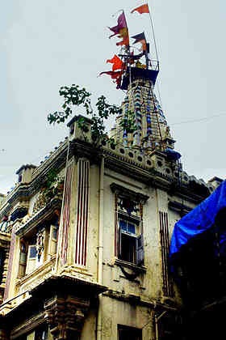
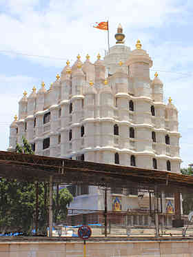
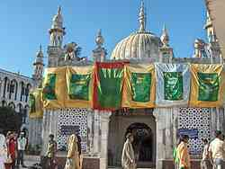
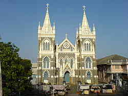
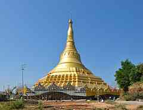

|
|
Places of worship

Mumbadevi Temple
Mumba Devi Mandir, or Mumba Devi Temple is an old Hindu temple in the city of Mumbai, dedicated to the goddess Mumba, the local incarnation of the Devi (Mother Goddess). Marathi Mumba derives from Sanskrit Maha-Amba "Great Mother", and Mumbai combines the name with ai, the Marathi word for "mother". While Hindu sects devoted to the goddess Mumbadevi are attested to as far back as the 15th century, it is said that the temple was built in 1675 near the main landing site of the former Bori Bunder creek against the north wall of the English Fort Saint George by a Hindu woman also named Mumba. The creek and fort are now deteriorated to a point at which they are but derelict reminders of the city's past. The temple, on the other hand, is still active. The goddess Mumba was patron of the agri (salt collectors) and kolis (fisherfolk), the original inhabitants of the seven islands of Bombay. She is depicted as a black stone sculpture in the temple. An etymology of Mumba that is popular is "Maha Amba," or "Great Mother," one of the many of India's more well-known names for the Hindu Mother Goddess (Devi). Located in Bhuleshwar area in South Mumbai, the temple is in the heart of the steel and clothing markets. It is a sacred pilgrimage spot and place of worship for Hindus and is thus visited daily by hundreds of people. It is not uncommon for visitors of Mumbai to pay their respects at the temple and is one of the popular tourist destinations in the city.

Siddhivinayak Temple
The Shree Siddhivinayak Ganapati Mandir is a Hindu temple dedicated to Lord Shri Ganesh. It is located in Prabhadevi, Mumbai, Maharashtra. It was originally built by Laxman Vithu and Deubai Patil on November 19, 1801. Though it is one of the richest temples in Mumbai, the current generation of Patil is staying in state of despair near the temple. The temple has a small mandap (hall) with the shrine for Siddhi Vinayak ("Ganesha who grants your wish"). The wooden doors to the sanctum are carved with images of the Ashtavinayak (the eight manifestations of Ganesha in Maharashtra). The inner roof of the sanctum is plated with gold, and the central statue is of Ganesha. In the periphery, there is a Hanuman temple as well. The Siddhivinayak Mandir evolved from a small, tiny place of worship to the Grand Temple that stands today in the later half of the twentieth century. Temple glory was bought not only by the politicians who frequented the temple but also Bollywood film stars who continuously visit to seek the blessings of Lord Ganesha. Siddhivinayak is well known as “Navasacha Ganapati” or “Navasala Pavanara Ganapati” ('Ganapati bestows whenever humbly genuinely prayed a wish' in Marathi) among devotees.

Elephanta Caves
The Elephanta Caves are a network of sculpted caves located on Elephanta Island, or Gharapuri (literally "the city of caves") in Mumbai Harbour, 10 kilometres (6.2 mi) to the east of the city of Mumbai in the Indian state of Maharashtra. The island, located on an arm of the Arabian Sea, consists of two groups of caves—the first is a large group of five Hindu caves, the second, a smaller group of two Buddhist caves. The Hindu caves contain rock cut stone sculptures, representing the Shaiva Hindu sect, dedicated to the god Shiva. The rock cut architecture of the caves has been dated to between the 5th and 8th centuries, although the identity of the original builders is still a subject of debate. The caves are hewn from solid basalt rock. All the caves were also originally painted in the past, but now only traces remain. The island was called Gharapuri and was a Hindu place of worship until Portuguese rule began in 1534. The Portuguese called the island Elephanta on seeing its huge gigantic statue of an elephant at the entrance. The statue is now placed in the garden outside the Bhau Daji Lad Museum (erstwhile Victoria & Albert Museum) at the Jijamata Udyaan (erstwhile Victoria Gardens) at Byculla in Mumbai. This cave was renovated in the 1970s after years of neglect, and was designated a UNESCO World Heritage Site in 1987 to preserve the artwork. It is currently maintained by the Archaeological Survey of India (ASI).

Keneseth Eliyahoo Synagogue
The Knesset Eliyahoo, also Knesset Eliyahu, is an 1885 Orthodox synagogue in Fort (area) in downtown Mumbai. It was built by Jacob Elias Sassoon and his brothers to commemorate their father and is run by the Jacob Sassoon Trust.

Haji Ali
The Haji Ali Dargah is a mosque and dargah (tomb) located on an islet off the coast of Worli in the Southern part of Mumbai. Near the heart of the city proper, the dargah is one of the most recognisable landmarks of Mumbai. An exquisite example of Indo-Islamic Architecture, associated with legends about doomed lovers, the dargah contains the tomb of Sayed Peer Haji Ali Shah Bukhari.

Mount Mary's Basilica
The Basilica of Our Lady of the Mount, more commonly known as Mount Mary Church, is a Roman Catholic Basilica located in Bandra, Mumbai. The feast of the Blessed Virgin Mary is celebrated here on the first Sunday after 8 September, the birthday of the Virgin Mary. The feast is followed by a week long celebration known locally as the Bandra Fair and is visited by thousands of people.

Global Pagoda
The Global Vipassana Pagoda is a Meditation Hall near Gorai, North-west of Mumbai, India. The Pagoda was inaugurated by Pratibha Patil, then President of India on 8 February 2009. It is built on donated land on a peninsula between Gorai creek and the Arabian Sea. The pagoda is to serve as a monument of peace and harmony. The Global Vipassana Pagoda has been built out of gratitude to the Buddha, his teaching and the community of monks practicing his teaching. Its traditional Burmese design is an expression of gratitude towards the country of Myanmar for preserving the practice of Vipassana. The shape of the pagoda is a copy of the Shwedagon Pagoda in Yangon, Myanmar. It was built combining ancient Indian and modern technology to enable it to last for a thousand years.
go to top
Home
Developed by SUGATO CHAKRABORTY (currently pursuing B.Tech in CSE from West Bengal University of Technology, developer at Boscom Software,2014)
|
|